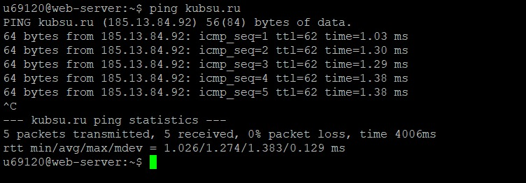

1. Подключаемся к учебному серверу kubsu-dev.ru через клиент Putty, используя хост kubsu-dev.ru и порт 58528.
2. Вводим свои логин и пароль.

3. Используем утилиту ping, чтобы узнать IP-адрес веб-сервера kubsu.ru (185.13.84.92).
Ping определяет связь между узлами обращающегося сервера kubsu-dev.ru и отвечающего сервера kubsu.ru.

С помощью этой команды мы также узнали скорость ответа сервера kubsu.ru на запрос с учебного сервера при передаче пакетов (1.03, 1.29 и так далее). Общая затраченная скорость передачи 5 пакетов составила 4006 мс. Еще мы узнали минимальную (1.026) и максимальную (1.383) скорости.
4. Используем команду nslookup -type=a и nslookup -type=mx, чтобы узнать A-запись и MX-запись соответственно домена kubsu.ru.
A-запись домена — это тип ресурсной записи DNS, который связывает домен с IP-адресом сервера (и указывает этот самый Ip-адрес нужного нам доменного имени).
MX (Mail Exchange) — это запись, указывающая на почтовый сервер доменного имени, который будет обрабатывать его электронную почту.
Утилита nslookup не ищет А-запись и Mx-запись непосредственно, а отправляет запрос на DNS сервера, которые уже производят поиск этих записей. DNS-сервера тут же возвращают эти значения, если они есть в кэшэ, или производят рекурсивный поиск по всей иерархической структуре сервера и записывают ответ в кэш на определенный срок.
На скрине видно, что A-запись сервера kubsu.ru = 185.13.94.92, а Mx-запись содержит целых 3 почтовых сервера = 10 mx2.kubannet.ru, 20 mx.kubannet.ru, 50 mx.kubsu.ru. Числа перед ними - это приоритетность, чем меньше число, тем она больше. Сначала почтовые серверы доставляют письмо на самый приоритетный адрес (mx2.kubannet.ru), если же он переполнен или вышел из строя, письмо перенаправляется на следующие по приоритетности сервера (mx.kubannet.ru и mx.kubsu.ru).
И домена kubsu-dev.ru
A-запись домена kubsu-dev.ru = 212.192.134.135. Заметим, что при вызове MX-записи домена kubsu-dev.ru командная строка выдает "no answer", которая означает, что у домена нет электронной почты. Вместе с ней выводится SOA-запись, содержащая административную информацию о домене (имя сервера, контакты администраторов и так далее).
5. Используем команду whois, чтобы узнать дату регистрации доменов kubsu.ru (1998-03-28) и kubsu-dev.ru (2020-02-12).
Также с помощью этой команды мы можем узнать, например, последнее обновление домена и его состояние (зарегистрирован, верифицирован, делегирован). Есть также данные о регистраторе (RU-CENTER-RU и WEBNAMES-RU), контактной информации администраторов, датах продления оплаты регистрации доменов (2025-04-30 и 2026-02-12) и удаления в случае неуплаты (2025-06-01 и 2026-03-15). Основным источником данных WHOIS являются регистраторы.